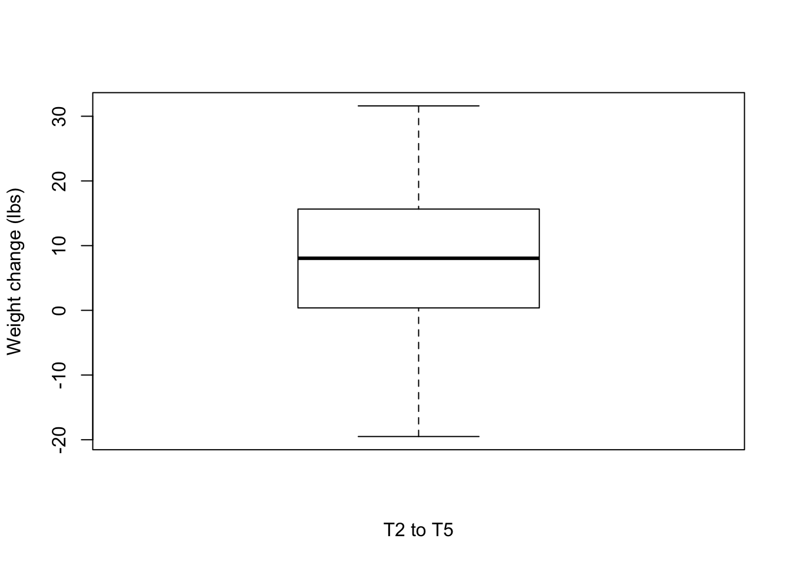

weight_over_one_year
Lauren Blake
2018-11-15
Last updated: 2018-11-15
workflowr checks: (Click a bullet for more information)-
✖ R Markdown file: uncommitted changes
The R Markdown is untracked by Git. To know which version of the R Markdown file created these results, you’ll want to first commit it to the Git repo. If you’re still working on the analysis, you can ignore this warning. When you’re finished, you can runwflow_publishto commit the R Markdown file and build the HTML. -
✔ Environment: empty
Great job! The global environment was empty. Objects defined in the global environment can affect the analysis in your R Markdown file in unknown ways. For reproduciblity it’s best to always run the code in an empty environment.
-
✔ Seed:
set.seed(12345)The command
set.seed(12345)was run prior to running the code in the R Markdown file. Setting a seed ensures that any results that rely on randomness, e.g. subsampling or permutations, are reproducible. -
✔ Session information: recorded
Great job! Recording the operating system, R version, and package versions is critical for reproducibility.
-
Great! You are using Git for version control. Tracking code development and connecting the code version to the results is critical for reproducibility. The version displayed above was the version of the Git repository at the time these results were generated.✔ Repository version: 241c630
Note that you need to be careful to ensure that all relevant files for the analysis have been committed to Git prior to generating the results (you can usewflow_publishorwflow_git_commit). workflowr only checks the R Markdown file, but you know if there are other scripts or data files that it depends on. Below is the status of the Git repository when the results were generated:
Note that any generated files, e.g. HTML, png, CSS, etc., are not included in this status report because it is ok for generated content to have uncommitted changes.Ignored files: Ignored: .DS_Store Ignored: analysis/.DS_Store Ignored: data/DAVID_2covar/ Ignored: data/DAVID_results/ Ignored: data/Eigengenes/ Ignored: data/aux_info/ Ignored: data/hg_38/ Ignored: data/libParams/ Ignored: data/logs/ Ignored: output/.DS_Store Untracked files: Untracked: .gitigore Untracked: _workflowr.yml Untracked: analysis/Collection_dates.Rmd Untracked: analysis/Converting_IDs.Rmd Untracked: analysis/Global_variation.Rmd Untracked: analysis/Preliminary_clinical_covariate.Rmd Untracked: analysis/VennDiagram2018-07-24_06-55-46.log Untracked: analysis/VennDiagram2018-07-24_06-56-13.log Untracked: analysis/VennDiagram2018-07-24_06-56-50.log Untracked: analysis/VennDiagram2018-07-24_06-58-41.log Untracked: analysis/VennDiagram2018-07-24_07-00-07.log Untracked: analysis/VennDiagram2018-07-24_07-00-42.log Untracked: analysis/VennDiagram2018-07-24_07-01-08.log Untracked: analysis/VennDiagram2018-08-17_15-13-24.log Untracked: analysis/VennDiagram2018-08-17_15-13-30.log Untracked: analysis/VennDiagram2018-08-17_15-15-06.log Untracked: analysis/VennDiagram2018-08-17_15-16-01.log Untracked: analysis/VennDiagram2018-08-17_15-17-51.log Untracked: analysis/VennDiagram2018-08-17_15-18-42.log Untracked: analysis/VennDiagram2018-08-17_15-19-21.log Untracked: analysis/VennDiagram2018-08-20_09-07-57.log Untracked: analysis/VennDiagram2018-08-20_09-08-37.log Untracked: analysis/VennDiagram2018-08-26_19-54-03.log Untracked: analysis/VennDiagram2018-08-26_20-47-08.log Untracked: analysis/VennDiagram2018-08-26_20-49-49.log Untracked: analysis/VennDiagram2018-08-27_00-04-36.log Untracked: analysis/VennDiagram2018-08-27_00-09-27.log Untracked: analysis/VennDiagram2018-08-27_00-13-57.log Untracked: analysis/VennDiagram2018-08-27_00-16-32.log Untracked: analysis/VennDiagram2018-08-27_10-00-25.log Untracked: analysis/VennDiagram2018-08-28_06-03-13.log Untracked: analysis/VennDiagram2018-08-28_06-03-14.log Untracked: analysis/VennDiagram2018-08-28_06-05-50.log Untracked: analysis/VennDiagram2018-08-28_06-06-58.log Untracked: analysis/VennDiagram2018-08-28_06-10-12.log Untracked: analysis/VennDiagram2018-08-28_06-10-13.log Untracked: analysis/VennDiagram2018-08-28_06-18-29.log Untracked: analysis/VennDiagram2018-08-28_07-22-26.log Untracked: analysis/VennDiagram2018-08-28_07-22-27.log Untracked: analysis/VennDiagram2018-08-28_13-05-27.log Untracked: analysis/VennDiagram2018-09-12_01-45-59.log Untracked: analysis/VennDiagram2018-09-12_01-49-31.log Untracked: analysis/VennDiagram2018-09-12_01-58-11.log Untracked: analysis/VennDiagram2018-09-12_01-59-46.log Untracked: analysis/VennDiagram2018-09-12_02-08-07.log Untracked: analysis/VennDiagram2018-09-12_02-08-56.log Untracked: analysis/VennDiagram2018-11-15_14-20-08.log Untracked: analysis/VennDiagram2018-11-15_14-20-15.log Untracked: analysis/VennDiagram2018-11-15_14-20-23.log Untracked: analysis/VennDiagram2018-11-15_14-21-14.log Untracked: analysis/VennDiagram2018-11-15_14-21-57.log Untracked: analysis/VennDiagram2018-11-15_14-33-34.log Untracked: analysis/VennDiagram2018-11-15_14-36-19.log Untracked: analysis/Weight_change_preliminary_analysis.Rmd Untracked: analysis/background_dds_david.csv Untracked: analysis/correlations_bet_covariates.Rmd Untracked: analysis/correlations_over_time.Rmd Untracked: analysis/genocode_annotation_info.Rmd Untracked: analysis/genotypes.Rmd Untracked: analysis/import_transcript_level_estimates.Rmd Untracked: analysis/phenotypes.Rmd Untracked: analysis/test_dds_david.csv Untracked: analysis/time_two_covar.Rmd Untracked: analysis/variables_by_time.Rmd Untracked: analysis/voom_limma.Rmd Untracked: analysis/voom_limma_hg37.Rmd Untracked: analysis/voom_limma_weight_change.Rmd Untracked: analysis/weight_over_one_year.Rmd Untracked: docs/VennDiagram2018-07-24_06-55-46.log Untracked: docs/VennDiagram2018-07-24_06-56-13.log Untracked: docs/VennDiagram2018-07-24_06-56-50.log Untracked: docs/VennDiagram2018-07-24_06-58-41.log Untracked: docs/VennDiagram2018-07-24_07-00-07.log Untracked: docs/VennDiagram2018-07-24_07-00-42.log Untracked: docs/VennDiagram2018-07-24_07-01-08.log Untracked: docs/figure/ Unstaged changes: Modified: .gitignore Modified: analysis/_site.yml Modified: analysis/about.Rmd Deleted: analysis/chunks.R Modified: analysis/index.Rmd Modified: analysis/license.Rmd
Introduction
The goal of this analysis is to look at the weight changes relative to discharge.
# Open libraries
library(ggplot2)Warning: package 'ggplot2' was built under R version 3.4.4library(VennDiagram)Warning: package 'VennDiagram' was built under R version 3.4.4Loading required package: gridLoading required package: futile.logger# Open weight change data
weight_change <- read.csv("../data/weight_relapse_weight_info.csv", stringsAsFactors = FALSE)Weight change over time, part 1
T1 to T2
# Plot weight change over time
boxplot(weight_change$Weight_diff_T1T2, xlab = "T1 to T2", ylab = "Weight change (lbs)")
# Number of individuals that lost weight
weight_subset <- weight_change[which(weight_change$Weight_diff_T1T2 < 0),]
nrow(weight_subset)[1] 2mean(weight_subset$Weight_diff_T1T2)[1] -2.85weight_subset <- weight_change[which(weight_change$Weight_diff_T1T2 > 0),]
nrow(weight_subset)[1] 53mean(weight_subset$Weight_diff_T1T2)[1] 12.68283T2 to T3
# Plot weight change over time
boxplot(weight_change$Weight_diff_T3T2, xlab = "T2 to T3", ylab = "Weight change (lbs)")# Number of individuals that lost weight
weight_subset <- weight_change[which(weight_change$Weight_diff_T3T2 < -5),]
nrow(weight_subset)[1] 2weight_subset <- weight_change[which(weight_change$Weight_diff_T3T2 < 0),]
nrow(weight_subset)[1] 7mean(weight_subset$Weight_diff_T3T2)[1] -6.364286summary(weight_subset$Weight_diff_T3T2) Min. 1st Qu. Median Mean 3rd Qu. Max.
-14.500 -7.750 -4.600 -6.364 -3.950 -2.050 weight_subset <- weight_change[which(weight_change$Weight_diff_T3T2 > 5),]
nrow(weight_subset)[1] 24weight_subset <- weight_change[which(weight_change$Weight_diff_T3T2 > 0),]
nrow(weight_subset)[1] 34mean(weight_subset$Weight_diff_T3T2)[1] 10.70588summary(weight_subset$Weight_diff_T3T2) Min. 1st Qu. Median Mean 3rd Qu. Max.
0.30 4.30 8.00 10.71 13.28 45.20 T2 to T4
# Plot weight change over time
boxplot(weight_change$Weight_diff_T4T2, xlab = "T2 to T4", ylab = "Weight change (lbs)")
# Number of individuals that lost weight
weight_subset <- weight_change[which(weight_change$Weight_diff_T4T2 < -5),]
nrow(weight_subset)[1] 7weight_subset <- weight_change[which(weight_change$Weight_diff_T4T2 < 0),]
nrow(weight_subset)[1] 8mean(weight_subset$Weight_diff_T4T2)[1] -9.6125summary(weight_subset$Weight_diff_T4T2) Min. 1st Qu. Median Mean 3rd Qu. Max.
-16.000 -14.625 -9.000 -9.613 -6.725 -0.300 weight_subset <- weight_change[which(weight_change$Weight_diff_T4T2 > 5),]
nrow(weight_subset)[1] 19weight_subset <- weight_change[which(weight_change$Weight_diff_T4T2 > 0),]
nrow(weight_subset)[1] 30mean(weight_subset$Weight_diff_T4T2)[1] 11.035summary(weight_subset$Weight_diff_T4T2) Min. 1st Qu. Median Mean 3rd Qu. Max.
0.300 3.925 8.300 11.035 12.975 40.600 T2 to T5
# Plot weight change over time
boxplot(weight_change$Weight_diff_T5T2, xlab = "T2 to T5", ylab = "Weight change (lbs)")
# Number of individuals that lost weight
weight_subset <- weight_change[which(weight_change$Weight_diff_T5T2 < -5),]
nrow(weight_subset)[1] 5weight_subset <- weight_change[which(weight_change$Weight_diff_T5T2 < 0),]
nrow(weight_subset)[1] 8mean(weight_subset$Weight_diff_T5T2)[1] -10.7875summary(weight_subset$Weight_diff_T5T2) Min. 1st Qu. Median Mean 3rd Qu. Max.
-19.50 -16.65 -11.95 -10.79 -4.30 -0.50 weight_subset <- weight_change[which(weight_change$Weight_diff_T5T2 > 5),]
nrow(weight_subset)[1] 22weight_subset <- weight_change[which(weight_change$Weight_diff_T5T2 > 0),]
nrow(weight_subset)[1] 24mean(weight_subset$Weight_diff_T5T2)[1] 14.00208summary(weight_subset$Weight_diff_T5T2) Min. 1st Qu. Median Mean 3rd Qu. Max.
1.250 6.275 11.400 14.002 21.225 31.600 Are the same individuals losing weight at each time period?
# Losing 0 pounds
weight_subset3 <- weight_change[which(weight_change$Weight_diff_T3T2 < 0),]
nrow(weight_subset3)[1] 7weight_subset4 <- weight_change[which(weight_change$Weight_diff_T4T2 < 0),]
nrow(weight_subset4)[1] 8weight_subset5 <- weight_change[which(weight_change$Weight_diff_T5T2 < 0),]
nrow(weight_subset5)[1] 8mylist <- list()
mylist[["T2 to T3"]] <- weight_subset3$ID
mylist[["T2 to T4"]] <- weight_subset4$ID
mylist[["T2 to T5"]] <- weight_subset5$ID
intersect(mylist$`T2 to T3`, mylist$`T2 to T4`)[1] 2218 2234 2242 2270intersect(mylist$`T2 to T3`, mylist$`T2 to T5`)[1] 2234 2270intersect(mylist$`T2 to T4`, mylist$`T2 to T5`)[1] 2232 2234 2270intersect(intersect(mylist$`T2 to T3`, mylist$`T2 to T4`), mylist$`T2 to T5`)[1] 2234 2270# Make as pdf
Four_comp <- venn.diagram(mylist, filename= NULL, main=NULL, cex=1.5 , fill = NULL, lty=1, height=2000, width=2000, scaled = FALSE)
grid.draw(Four_comp)dev.off()null device
1 pdf(file = "~/Dropbox/Figures/Negative_weight_loss.pdf")
grid.draw(Four_comp)
dev.off()null device
1 # Losing 5 pounds
weight_subset3 <- weight_change[which(weight_change$Weight_diff_T3T2 < -5),]
nrow(weight_subset3)[1] 2weight_subset4 <- weight_change[which(weight_change$Weight_diff_T4T2 < -5),]
nrow(weight_subset4)[1] 7weight_subset5 <- weight_change[which(weight_change$Weight_diff_T5T2 < -5),]
nrow(weight_subset5)[1] 5mylist <- list()
mylist[["T2 to T3"]] <- weight_subset3$ID
mylist[["T2 to T4"]] <- weight_subset4$ID
mylist[["T2 to T5"]] <- weight_subset5$ID
intersect(mylist$`T2 to T3`, mylist$`T2 to T4`)[1] 2234intersect(mylist$`T2 to T3`, mylist$`T2 to T5`)[1] 2234intersect(mylist$`T2 to T4`, mylist$`T2 to T5`)[1] 2232 2234 2270intersect(intersect(mylist$`T2 to T3`, mylist$`T2 to T4`), mylist$`T2 to T5`)[1] 2234# Make as pdf
Four_comp <- venn.diagram(mylist, filename= NULL, main=NULL, cex=1.5 , fill = NULL, lty=1, height=2000, width=2000, scaled = FALSE)
grid.draw(Four_comp)
dev.off()null device
1 pdf(file = "~/Dropbox/Figures/5_pound_weight_loss.pdf")
grid.draw(Four_comp)
dev.off()null device
1 Weight change over time, part 2
T2 to RRED T4
# Plot weight change over time
boxplot(weight_change$Weight_diff_REDT4T2, xlab = "T2 to RRED T4", ylab = "Weight change (lbs)")
# Number of individuals that lost weight
weight_subset <- weight_change[which(weight_change$Weight_diff_REDT4T2 < -5),]
nrow(weight_subset)[1] 0weight_subset <- weight_change[which(weight_change$Weight_diff_REDT4T2 < 0),]
nrow(weight_subset)[1] 1mean(weight_subset$Weight_diff_REDT4T2)[1] -3.08summary(weight_subset$Weight_diff_REDT4T2) Min. 1st Qu. Median Mean 3rd Qu. Max.
-3.08 -3.08 -3.08 -3.08 -3.08 -3.08 weight_subset <- weight_change[which(weight_change$Weight_diff_REDT4T2 > 5),]
nrow(weight_subset)[1] 2weight_subset <- weight_change[which(weight_change$Weight_diff_REDT4T2 > 0),]
nrow(weight_subset)[1] 5mean(weight_subset$Weight_diff_REDT4T2)[1] 7.166summary(weight_subset$Weight_diff_REDT4T2) Min. 1st Qu. Median Mean 3rd Qu. Max.
0.200 3.500 4.630 7.166 12.000 15.500 T2 to RRED T5
# Plot weight change over time
boxplot(weight_change$Weight_diff_REDT5T2, xlab = "T2 to RRED T5", ylab = "Weight change (lbs)")# Number of individuals that lost weight
weight_subset <- weight_change[which(weight_change$Weight_diff_REDT5T2 < -5),]
nrow(weight_subset)[1] 1weight_subset <- weight_change[which(weight_change$Weight_diff_REDT5T2 < 0),]
nrow(weight_subset)[1] 3mean(weight_subset$Weight_diff_REDT5T2)[1] -5.01summary(weight_subset$Weight_diff_REDT5T2) Min. 1st Qu. Median Mean 3rd Qu. Max.
-6.440 -5.535 -4.630 -5.010 -4.295 -3.960 weight_subset <- weight_change[which(weight_change$Weight_diff_REDT5T2 > 5),]
nrow(weight_subset)[1] 3weight_subset <- weight_change[which(weight_change$Weight_diff_REDT5T2 > 0),]
nrow(weight_subset)[1] 3mean(weight_subset$Weight_diff_REDT5T2)[1] 11.72667summary(weight_subset$Weight_diff_REDT5T2) Min. 1st Qu. Median Mean 3rd Qu. Max.
9.31 10.21 11.10 11.73 12.94 14.77 How many individuals lost weight relative to admission weight?
# T1 to T3
weight_subset <- weight_change[which(weight_change$Weight_diff_T3T1 < 0),]
nrow(weight_subset)[1] 1# T1 to T4
weight_subset <- weight_change[which(weight_change$Weight_diff_T4T1 < 0),]
nrow(weight_subset)[1] 2# T1 to T5
weight_subset <- weight_change[which(weight_change$Weight_diff_T5T1 < 0),]
nrow(weight_subset)[1] 2Session information
sessionInfo()R version 3.4.3 (2017-11-30)
Platform: x86_64-apple-darwin15.6.0 (64-bit)
Running under: OS X El Capitan 10.11.6
Matrix products: default
BLAS: /Library/Frameworks/R.framework/Versions/3.4/Resources/lib/libRblas.0.dylib
LAPACK: /Library/Frameworks/R.framework/Versions/3.4/Resources/lib/libRlapack.dylib
locale:
[1] en_US.UTF-8/en_US.UTF-8/en_US.UTF-8/C/en_US.UTF-8/en_US.UTF-8
attached base packages:
[1] grid stats graphics grDevices utils datasets methods
[8] base
other attached packages:
[1] VennDiagram_1.6.20 futile.logger_1.4.3 ggplot2_3.0.0
loaded via a namespace (and not attached):
[1] Rcpp_0.12.18 formatR_1.5 compiler_3.4.3
[4] pillar_1.3.0 git2r_0.23.0 plyr_1.8.4
[7] workflowr_1.1.1 bindr_0.1.1 futile.options_1.0.1
[10] R.methodsS3_1.7.1 R.utils_2.7.0 tools_3.4.3
[13] digest_0.6.16 evaluate_0.11 tibble_1.4.2
[16] gtable_0.2.0 pkgconfig_2.0.2 rlang_0.2.2
[19] yaml_2.2.0 bindrcpp_0.2.2 withr_2.1.2
[22] stringr_1.3.1 dplyr_0.7.6 knitr_1.20
[25] rprojroot_1.3-2 tidyselect_0.2.4 glue_1.3.0
[28] R6_2.2.2 rmarkdown_1.10 lambda.r_1.2.3
[31] purrr_0.2.5 magrittr_1.5 whisker_0.3-2
[34] backports_1.1.2 scales_1.0.0 htmltools_0.3.6
[37] assertthat_0.2.0 colorspace_1.3-2 stringi_1.2.4
[40] lazyeval_0.2.1 munsell_0.5.0 crayon_1.3.4
[43] R.oo_1.22.0
This reproducible R Markdown analysis was created with workflowr 1.1.1